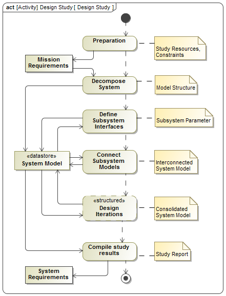
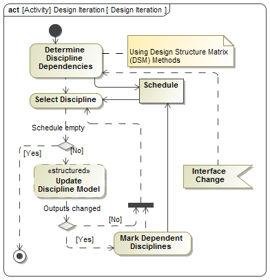
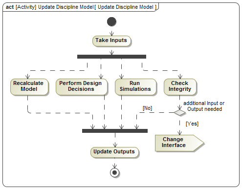

Preparation
Once a customer has expressed his need to perform a concurrent design study, the preparation start with 1)
collecting and documenting mission requirements, 2) identifying study constraints (budget, technology,
confidentiality), 3) allocation of resources (people and facility time). The decision on which experts to
involve is related to an approximate decomposition of the system and allocation of system functions to
subsystems. At the end of the preparation (or start of the design study) a first joint meeting of the full
design team is held together with representatives of the customer. The purpose of the meeting is to clarify the
mission requirements and the role of each study participant.
Systems Decomposition
Based on the high-level functions the system has to fulfill, subsystems are identified and assigned to discipline
experts present in the team. The structure of the system is encoded and stored in a system model.
Connecting Subsystem Models
After each subsystem has defined it’s input and output parameters, the discipline expert together with the team
lead identify the source for each input. When starting with new models from scratch, this is a non-trivial task.
It happens that for certain parameters, no other subsystem is yet providing that parameter as an output, and it
must be decided which discipline shall produce and own it. For some inputs no other source can be identified,
and the value can be determined freely by the discipline expert. It also happens that more than one subsystem
claims to produce a certain output, and it must be decided which discipline shall produce and own it and the
other disciplines take it as an input. In this step the subsystem model interfaces are refined in order to be
able to interconnect them.
Design Iterations
The core of the design study are the concurrent design iterations. The goal of each iteration is to consolidate
the design by making sure all input parameters take values which are correspondent to the mission requirements
or to the output values produced by other subsystems. Since dependency relationships of subsystems are
transitive and can form cycles, the design of subsystems potentially needs to re-iterated. The process of a
single design iteration is described in the next section. Throughout the design study an arbitrary number of
design iterations can occur, and they operate on a storage which keeps the state of the system model.
Compile Study Report
In conclusion of a Phase A design study one or more resulting system designs, which were evaluated to satisfy the
mission requirements need to be documented and characterized according to common or mission specific performance
measures (e.g. mass, cost, risk, schedule). For the continuation of the project, in case of approval of the
results of the design study, the system requirements contained in the documentation will serve as starting point
for the Phase B.

From the dependencies among elements in system model a design structure matrix (DSM) can be derived.
Based on this DSM a clustering algorithms determines an optimal sequence for updating one subsystem after the other.
Using this schedule one discipline is taken at a time and the responsible expert is asked to update his
subsystem model. The internals of this action are described in a separate procedure in the next section. After
that, depending on whether the subsystem’s output parameter values have changed, the schedule is updated or not.
More precisely, if the outputs did change, then the disciplines which depend on them are put on the schedule
again. In case the update of a discipline model led to changes of subsystem interfaces and thereby also
dependencies, the schedule needs to be recalculated. Once there are no more disciplines on the schedule, it
means the integrated system models has converged and represents a feasible point design and the iteration is
finished.

A discipline expert updating a subsystem model performs a simple sequence of activities. First the input values
which are connected to other subsystems need to be updated. Depending on the kind of model, the designer either
executes a calculation, runs a simulation, performs decisions based on prior knowledge or a combination of them.
After that all the subsystem’s output parameters are updated. In parallel the expert checks the model for
integrity, and in case additional input or output parameters are needed the interface is modified accordingly.
Changes to the parameters are reflected in the stored system model.